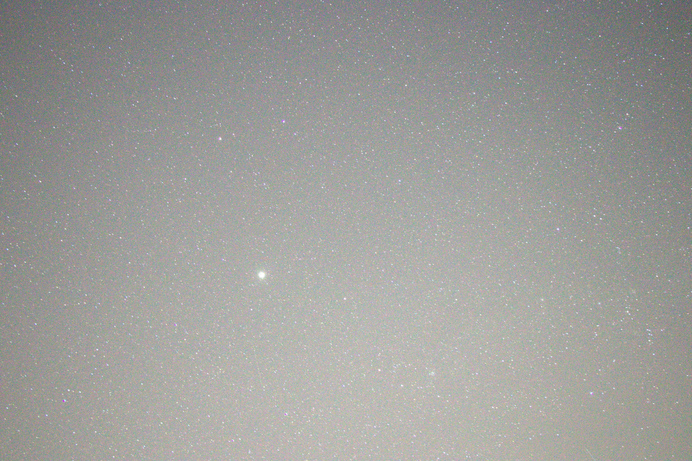
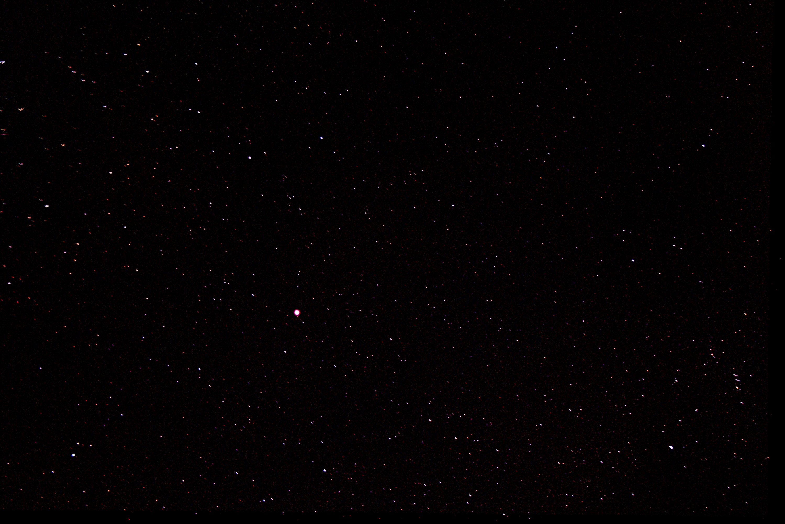
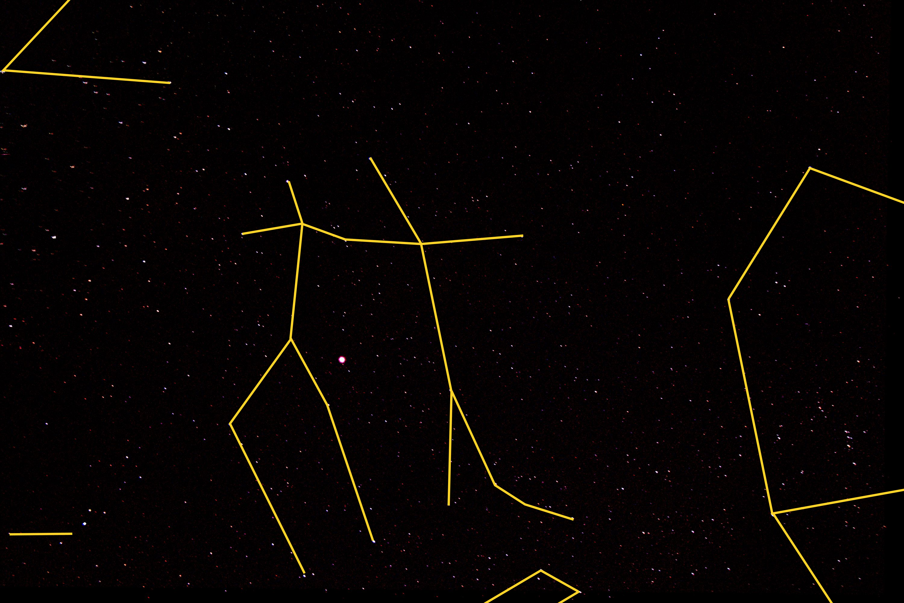
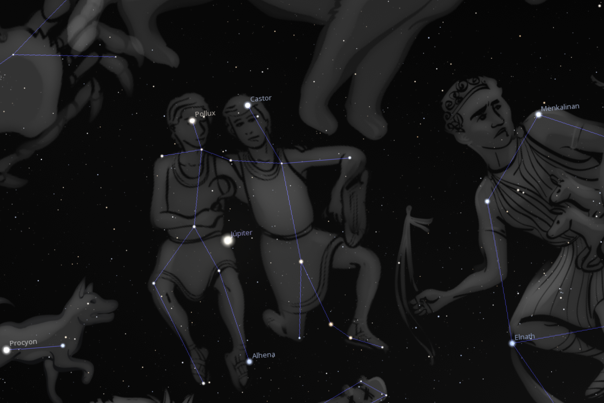

Raw frame

Original frame captured directly from the camera before processing.
MISSION 001
First successful capture and validation of a planetary field during the observatory’s pre-tracking phase.

Original frame captured directly from the camera before processing.

Processed image used to improve visibility of Jupiter and the surrounding star field.

Manual field annotation based on alignment with the reference sky map.

Reference map used to validate the observed field and confirm Jupiter’s position.
A sequence of 10 exposures was captured and later processed to improve visibility of Jupiter and the surrounding star field.
The processed frame was then compared with a Stellarium reference image of the same region of sky. By matching the visible stars manually, the observed field was aligned and validated.
Based on that alignment, constellation lines were reconstructed on the captured image to confirm the position of Jupiter within the observed field.
Mission 001 confirms the system’s ability to capture, process and identify a real planetary field during the observatory’s pre-tracking validation phase.
Jupiter was successfully recorded and validated against the surrounding Gemini star field.